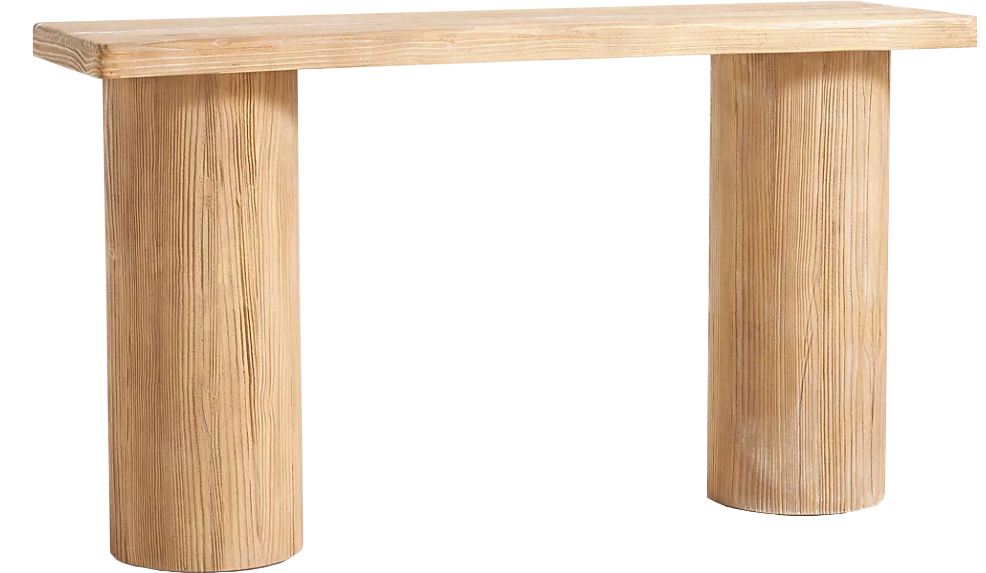
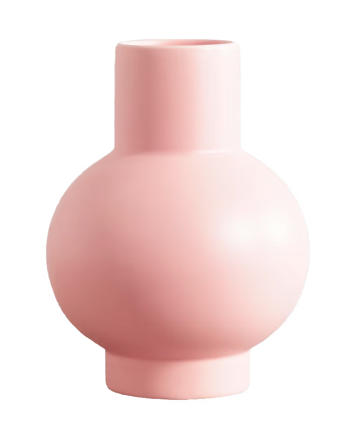

When is the last time to purchase home products?
Last time I bought something for my home was during black Friday and I found a great deal of a console table. I always wanted a console table but it’s not the first priority of the furniture hunt, so I waited until I found the best price/style I can get.
Do you have any experience of furnishing? Do you enjoy it?
Yes, I have experience of decorating my home. Well, I would say Half half, as I feel it was difficult to visualize the final style in the beginning, and it took a lot of time to search for the right furniture, but I enjoyed seeing the final outcome. The planning part is hard, I think a lot of fuss happened in the process of planning because there isn’t a go-to-place for all my requirement.
What do you do in planning?
I would gather inspirations online, or even do a planning sketch myself. I mainly look for style inspirations on Pinterest or brands I follow on Instagram, along with some furniture retail websites. After settled on a style, I would search for furniture and decorations online with specific keywords relating to the style, or I would go to a physical furniture store to look for furniture that would match the overall style. After that, I would use a measuring tape to meature dimension. There are Some websites or apps do VR visualization, like preview the product in real space, but I find them not 100% accurate. So I barely use it.
What makes a cozy home?

Whatever you feel comfortable living in. No matter what style, but more importantly it should fit your day to day needs.
What are the things that you like best about your home?
I like the dining area, as I matched the dining table and chairs myself. I put in some effort and found them on different websites. It turned out a lot better than buying a set. I did my best choosing furniture, and every corner feels cozy with a cohesive style.
What do you want to improve in your home?
I’d like to get more decorative pieces, such as wall arts or plants, as my current wall looks a bit empty and there are still some corners that can be leveled up with better ideas. I like home products that are well designed in both practical and visually appealing ways.
What value do you consider most for a furniture? How do you define the value?
I care about practicability the most. Because I think it is the most important if a furniture can be well utilized in a space and makes people living in the space comfortable and benefit from the convenience. The practicability of a furniture or a home product is whether it serves your daily needs. i.e. I bought an automatic coffee machine as I drink coffee every morning and owning it saved me a lot of time heading out getting coffee, so I think it is practical. And also I will visualize myself or guests coming to my home using a certain piece of furniture before buying it. If I find it can be well utilized, I will think it has the value of practicability. And I hope that not only me but other people, such as family members or my pet, also enjoy using the furniture or home product I bought.